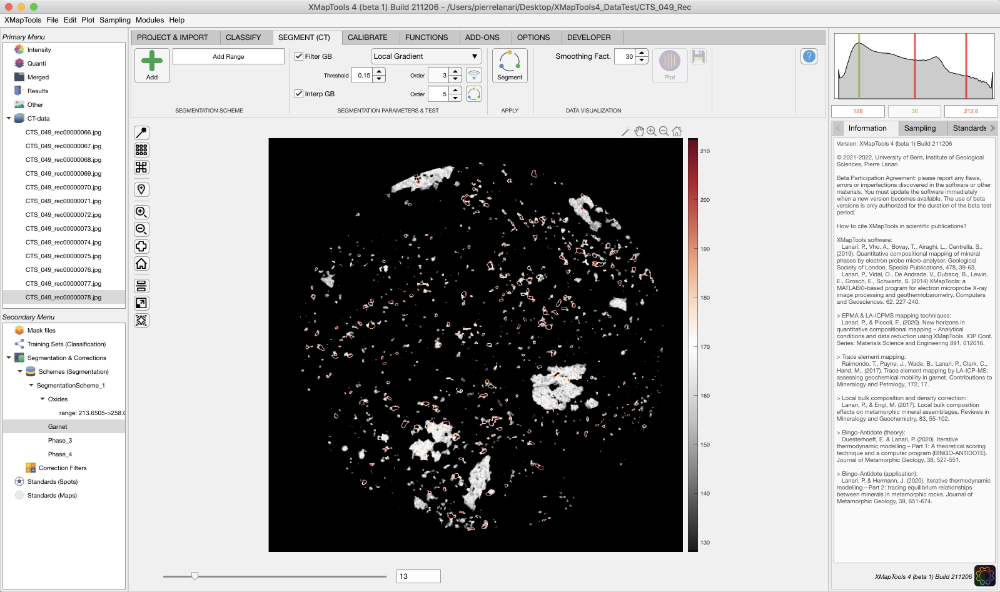

Help file version 22.12.2022 by M. Tedeschi & P. Lanari
Access XMapTools resources online
This help file contains a description of the tools available in the section Segment. These tools are optimised for CT data and, should not be used with other data types.
Processing CT-data for segmentation is divided into five steps:
Segmentation schemes are available in the secondary menu under Segmentation & Corrections in Schemes (Segmentation).
Select a CT-image under the node CT-data in the primary menu and select the item Schemes (Segmentation) in the secondary menu.
The button Add (Scheme / Group / Range) has several functionalities depending on the item selected in the secondary menu:Note that selected ranges can overlap, but the algorithm will always consider the group in a sequential order. Pixels can be ignored by the segmentation algorithm if they are out of range.

Figure 1: Example of selection of range of values (hee from 128 to 212.6) for garnet. Note that this range has been saved in the segmentation scheme shown in the secondary menu.These parameters can be adjusted in the section Segment (CT) and Segmentation parameters & Test. Two main algorithms are implemented: Filter GB to eliminate grain boundaries and Interp GB to growth phases and re-interpolate filtered pixels.
Select a CT-image under the node CT-data in the primary menu and a segmentation scheme in the secondary menu.
Four algorithms are available and can be selected using a dropdown menu:
You can adjust the threshold value (range between 0 and 1) above which a grain boundary will be detected and the order (for local range).
The button Calculate GB map opens a new figure containing two plots (e.g. Fig. 2): the outcome of the algorithm on the left and the same map with the filtered grain boundaries shown in red on the right. The axes of the two plots are liked, zooming on one plot automatically adjusts the view of the second plot. Figure 2: Example of grain boundary filter using the algorithm Local Gradient and a filter threshold of 0.15. Zoom has been used to show display a small portion of the image.You can test the segmentation on the selected image by using the button Segment Selected Image  (small one) available in Segmentation parameters & Test.
(small one) available in Segmentation parameters & Test.
The resulting ROI is available in the category ROI of the primary menu.
 The button Segment All Images applies the segmentation to all images available in CT-data. The resulting ROI is available in the category ROI of the primary menu.
The button Segment All Images applies the segmentation to all images available in CT-data. The resulting ROI is available in the category ROI of the primary menu.
Select a ROI containing multiple slices (3D ROI) in the primary menu.
 The button Plot Phase Proportions generates several plots to investigate the spatial distribution of the segmented groups.
The button Plot Phase Proportions generates several plots to investigate the spatial distribution of the segmented groups.